Sites web
Un site qui inspire confiance dès le premier regard.
Avoir un site web est aujourd’hui une évidence. La recherche de clients passe par le web, et ce premier contact doit être une réussite. C’est exactement notre objectif.
Expérience digitale sur mesure
Une expérience digitale, un contrat clair, toujours avec le sourire. Codio accompagne vos projets web et mobile avec une approche simple, humaine et durable.
Sites web
Avoir un site web est aujourd’hui une évidence. La recherche de clients passe par le web, et ce premier contact doit être une réussite. C’est exactement notre objectif.
Applications mobiles
Simplifier la vie, c’est l’objectif de toute application. Rapidité, efficacité et ergonomie, avec une implication réelle dans l’évolution de votre business.
Approche
Notre force réside dans la réalisation de vos produits tout en établissant un lien durable avec vous, tournés ensemble vers l’avenir.
Chaque projet est conçu avec clarté, implication et sens du détail pour donner naissance à une solution sur mesure, cohérente avec votre image et vos objectifs.
Contact
Besoin d’un site vitrine, d’une application mobile ou d’une refonte plus moderne de votre présence digitale ? Parlons-en.
Portfolio
Un aperçu de réalisations web, branding et interfaces métiers, avec une lecture plus actuelle du travail déjà présenté sur Codio.
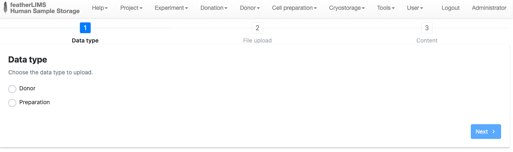
Un écran d’import structuré pour un outil de laboratoire, pensé pour accélérer la saisie et fiabiliser les données.
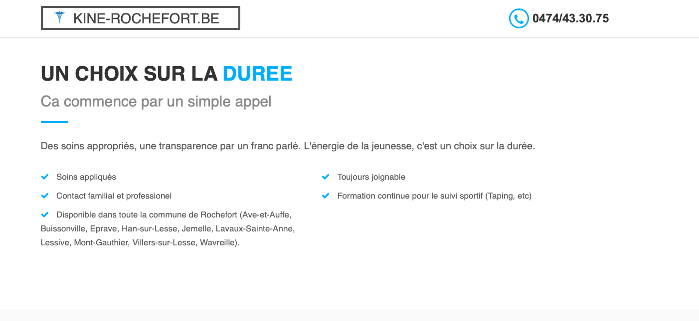
Une présence web claire pour un cabinet de kinésithérapie, avec services, disponibilité et contact mis en avant.
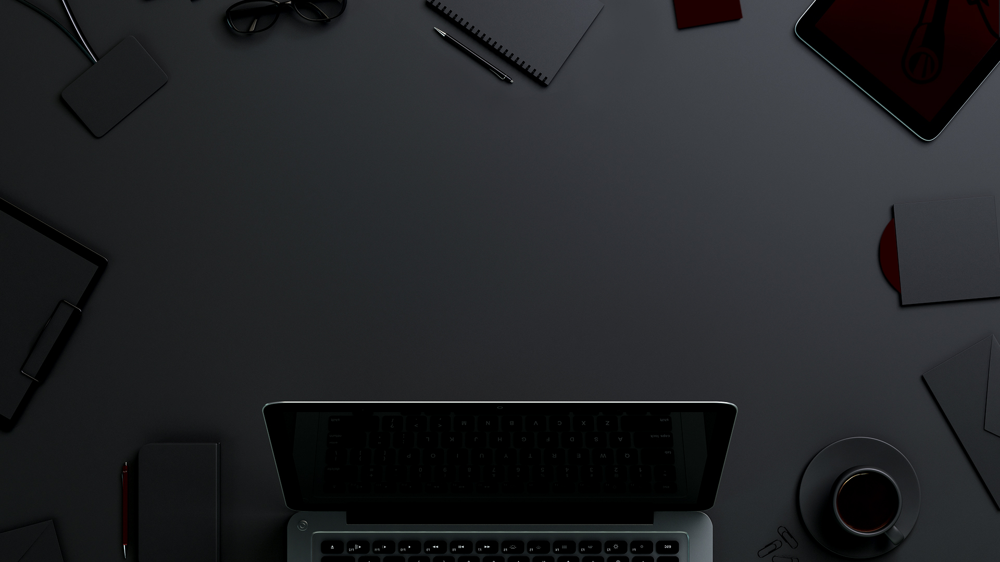
Un visuel d’ambiance premium pour soutenir une identité digitale sobre, inspirante et plus haut de gamme.
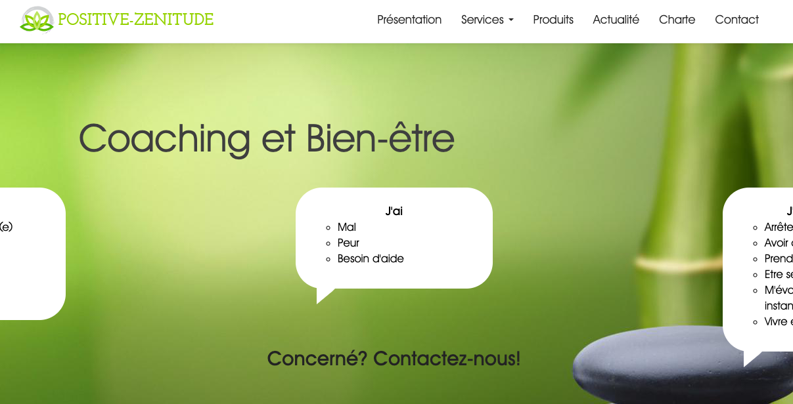
Une landing page douce et rassurante pour un univers coaching, centrée sur l’accompagnement humain.
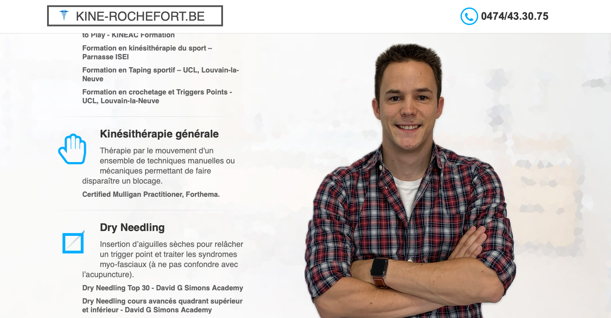
Une vitrine professionnelle qui clarifie les spécialisations, les bénéfices et le parcours de soin.
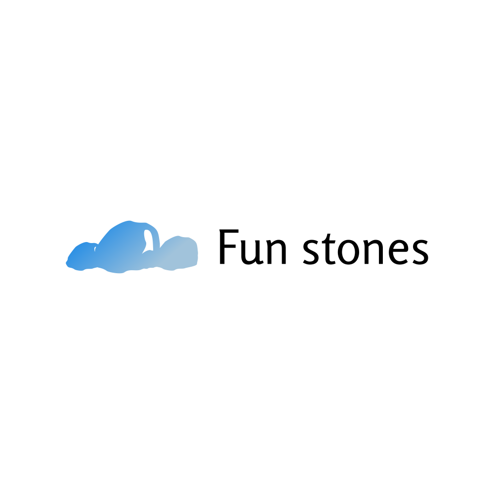
Un symbole simple et mémorisable, adapté à une identité légère, tech ou service digital.
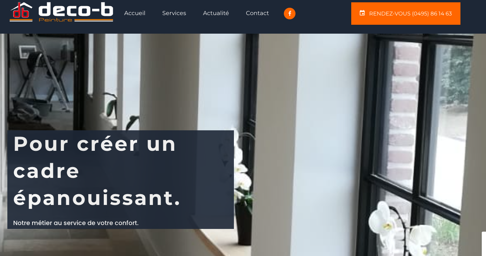
Un site orienté conversion pour un métier de terrain, avec mise en avant du savoir-faire et du contact rapide.
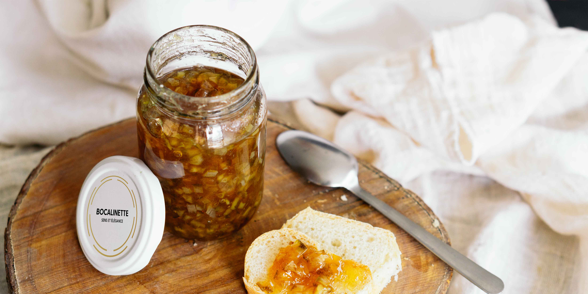
Une image chaleureuse conçue pour renforcer une marque food locale et son univers authentique.
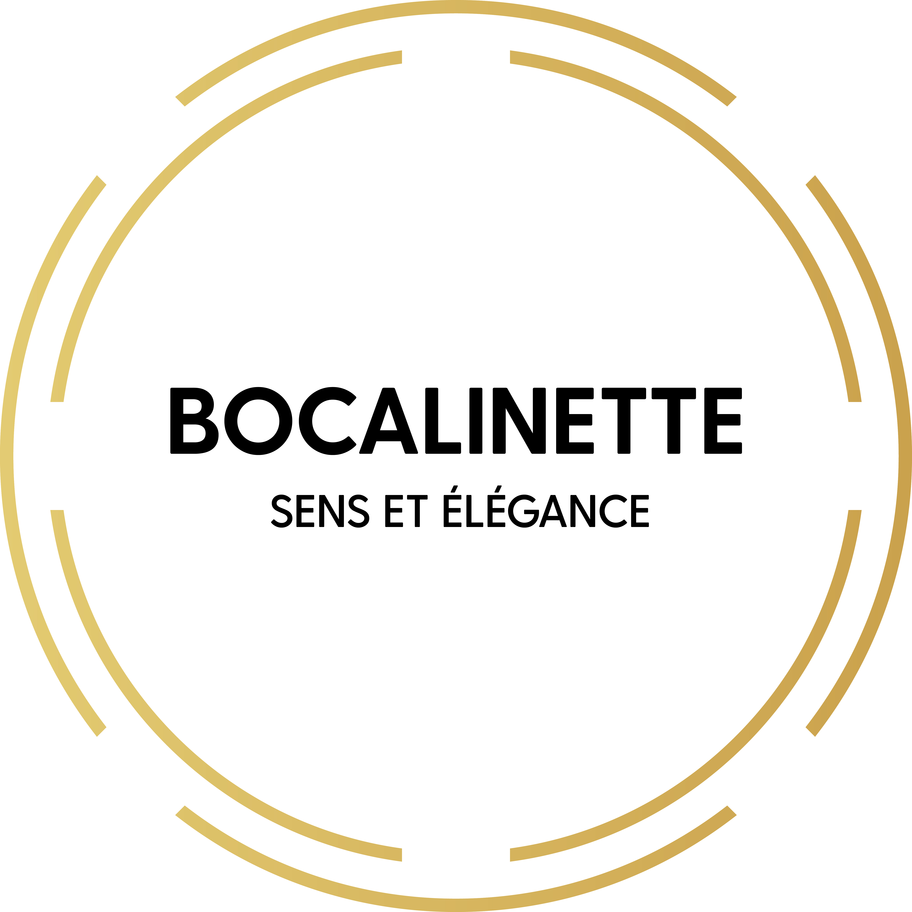
Une création graphique riche et expressive, pensée pour ancrer une marque dans un imaginaire naturel et vivant.
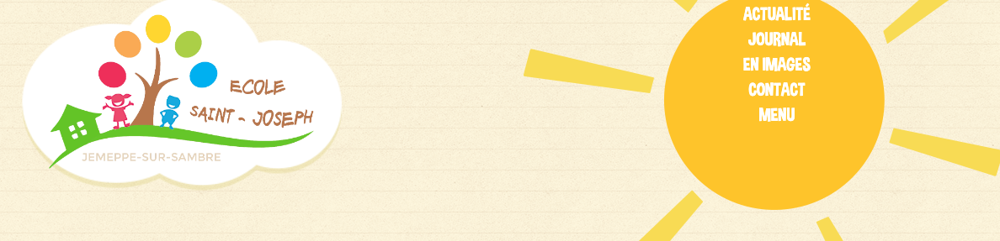
Une interface web concise pour exposer une offre métier, rassurer rapidement et orienter vers l’action.
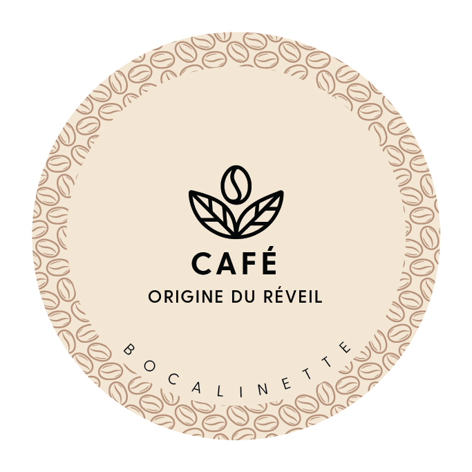
Un logo circulaire expressif pour une marque café, facile à décliner sur packaging et supports sociaux.
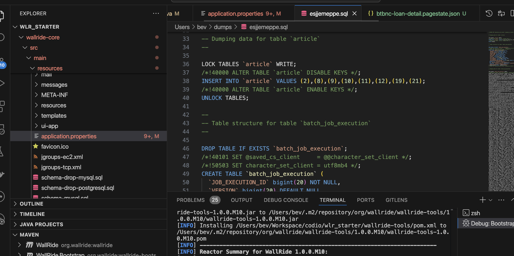
Un aperçu du travail backend et base de données, montrant la capacité à livrer aussi la partie technique du produit.